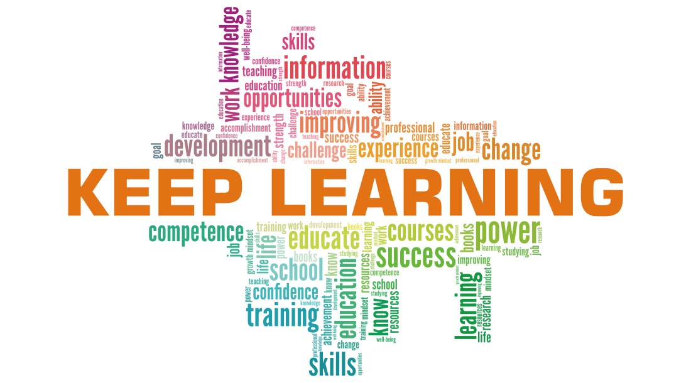

I am the president of a club in school. This role has given me the opportunity to collaborate with students from different departments through regular meetings and events. I learned to communicate clearly, listen actively, and respect diverse opinions.
These skills are directly relevant to a Help Desk position, where effective communication is essential. Help Desk professionals must explain technical solutions in simple, non-technical language, handle customer enquiries calmly under pressure, and work closely with team members to resolve issues efficiently.
My part-time experience as an IT Project Presenter has proven my strong communication skills by enabling me to deliver clear messages to people from varied backgrounds.
I am committed to continuously developing my communication and interpersonal skills as a reflective lifelong learner in the IT support field.